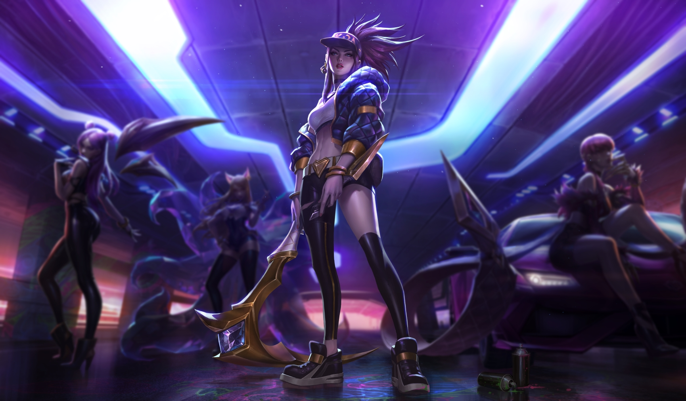

POP/STARS
"Riot has outdone themselves, once again."
Today, I’m here to talk about the new music video - “POP/STARS” - release by the group K/DA. For this review I plan to use the song’s lyrics, video footage, interview, and the random information tidbits given by Riot to form my opinion.
This song’s rhythm and lyrics prove to be quite upbeat and asserting, the pop group pronouncing their overconfidence and belief in their place at the top, even going as far as wishing good luck to whoever tries to disprove this. Listeners can’t help but feel an esteem booster from this, getting to revel in the same feelings the song evokes.
This type of music isn’t unheard of, one example including Like a cat
by AOA. However, POP/STARS
differs by also including each of the member’s hardships and showing how they complement and
push each other to their fullest artistic potential, making this song one others can take
even more inspiration from.
Meet The Stars
Ahri
We see Ahri’s debut again in the Pop Star scene, this time featuring a more mature and stylish look to show off. Taking on the role of the group’s leader, our charming, stunning celebrity brings her past experiences to the table, with it including leadership skills to enable each member to express their talents equally within bold, beautiful lyrics that people can love and have confidence in -- all the while displaying her elegant and high fashion personality.
Ahri’s already established career could help explain how and why she functions as the one who consolidates the whole group: having helped Akali sign a label when she wasn’t mainstream enough and having reconnected with Evelynn, who had previously worked alone to write her own music, after disagreements with other musical groups.
So keep your eyes on me now
[You'll like whatever you see]
-In POP/STARS
from K/DA
Akali
Having spent most of her early life as a martial arts student but leaving later on for her calling as an artist, Akali signs a label with Ahri to become the youngest and newest member of K/DA.
With the help of Evelynn, the punk ninja literally and figuratively steals away the spotlight with an unmatchable rap and breathtaking visuals, leading her to quickly become the fans’ favorite. Wearing a punk rapper outfit, using a bandana and spray cans, and having an overall smug attitude and pose, the high hop ninja carries an untamed style.
This rebellious personality expressed by Akali in the music video helps to complement its message: they’re going to rise up to the top, whether or not people like it.
I told [Akali] to stop
trying to be the most creative rap artist in Asia, and to just be it.
-Evelynn, in a post-release interview
Evelynn
Known for being a demanding artist with an uncompromising vision, Evelynn doesn't accept anything that isn't short of perfection. This strict attitude has lead the diva to have difficulty working with previous musical groups, due to creative differences. However, with Ahri's leadership, the POP industry's spotlight is cast once again upon Evelynn.
The mindset Evelynn has can make her troublesome to work with, her turbulent presence in the industry being met with a diehard
fan base, but the Siren's other side that isn't often talked about is her friendship values, being close to few people and
very protective of them. While Akali was writing the rap for POP/STARS
, Ahri encouraged her to go further, meanwhile,
Evelynn was more direct in her advice, possibly leading Akali to perform to her fullest potential.
Evelynn has been romantically linked with several missing male celebrities but never has confirmed a relationship, declining to comment on the subject whenever it is brought up on interviews.
I’m an artist, not a socialite. I won’t apologize for high standards.
Kai'sa
Recognized as the dreamer of the group, Kai'sa aspires the group to aim for the stars.
Having lived in ten countries before pursuing her dream of becoming a pop star, Kai'sa ensures the group never has a boring dance practice by bringing international style to its coreography. Kai'sa was also responsible for the spray painted art contrasted by black light that appears during Akali's rap section, showing how there's so much more than what meets the eye.
In a reply to a question made on social media, Kai'sa described her motive to dance as being like a call from the void, hungry and demanding for release, stirring a symphony of movement in her as the music begins. A story to leave the void behind, and fall back into the steps of life, as her body reacts to its call.
A dream is a place between fantasy and reality, where anything can happen. In our dream,
K/DA is confident and strong. We can do anything, and so can you.